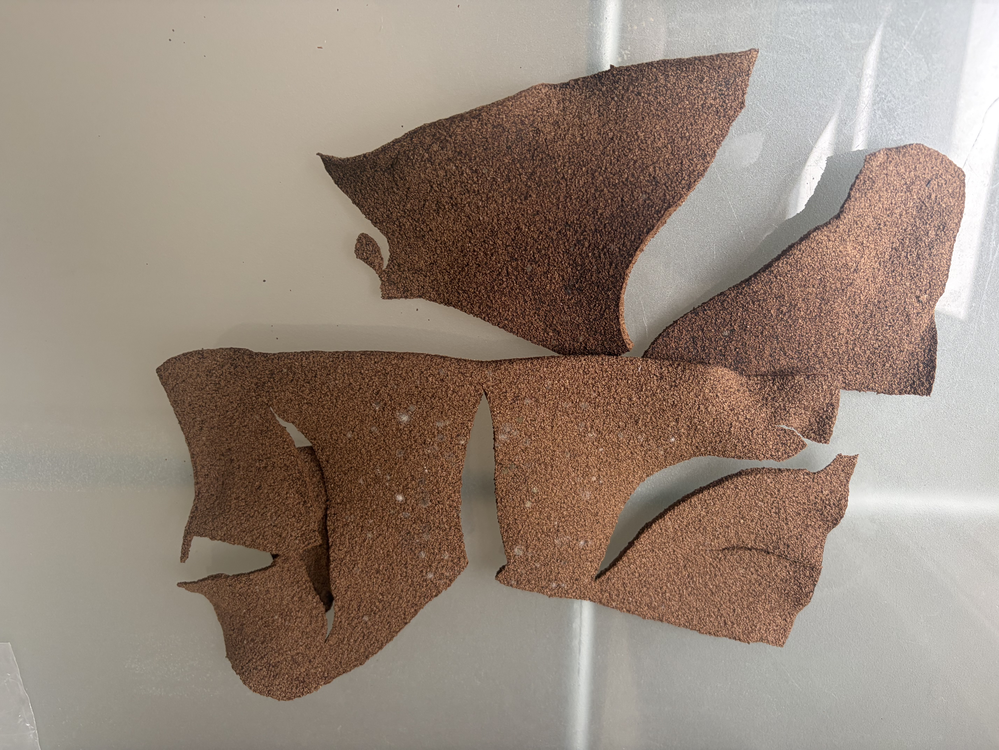

← Back
Biofilms
Used coffee grounds, glycerin and agar agar can be used to make a flexible, leather-like material.
Coffee bioplastic is a versatile material made of used coffee grounds, a humectant (glycerin) and a stabilising agent (agar agar). Depending on the specific ratio of ingredients the material can be highly rigid to flexible and soft. Its applications include food packaging, consumer goods and industrial components and furniture.
Coffee Biofilm 3
Ingredients
15g agar agar, 25g glycerin, 400ml water, 70g dried used coffee grounds
Method
Combine water and glycerin. Mix.
Add agar agar and coffee grounds. Mix.
Heat on setting 2 and whisk until thick and boiling.
Turn heat off, keep stirring.
Pour into silicone mould.
Wait 15 minutes, then remove from mould.
Coffee Biofilm 2 — 18 May 2026
Ingredients
300ml water, 30g agar agar, 30g glycerin, 30g potato starch
Method
Combine all dry ingredients with water and mix.
Heat, mixing until thick and opaque.
Turn off heat and continue to whisk.
Set on bar tray (matte).
Observations (19 May)
Drying. Still dark in colour.
Issue with middle section — scraped from pot after cooling.
Coffee Biofilm 1 — 17 May 2026
Ingredients
15g potato starch, 15g agar agar, 15g glycerin, 180ml water, 18g dried used coffee grounds
Method
Combine potato starch, agar agar, and glycerin. Mix.
Add 180ml water and coffee grounds.
Heat on setting 2 until opaque and viscous.
Turn heat off, keep stirring.
Pour into silicone mould.
Observations (19 May)
Drying well — leaving for 2 more days.
May not be thick enough.
Question: will it come off the mould?
Avocado Biofilm — 17 May 2026
Part 1 — Preparing Avocado Liquid
Combine water with clean skin and pits of 2 avocados.
Boil for 1 hour. Allow to cool.
Part 2 — Bioplastic Base
Ingredients: 12g agar agar, 12g glycerin, 12g potato starch, 120ml avocado water
Combine agar agar, glycerin, potato starch, and 120ml avocado water. Mix.
Add remaining 120ml water.
Heat at setting 2/3, whisking continually until opaque and thicker.
Turn off heat, keep stirring.
Pour into silicone mould, press into each corner.
Observations (19 May)
Not enough mixture.
Cracked — possibly related to agar agar ratio or process.
Dye needs more avocados.
Need to remove skin and pits more thoroughly next time.
